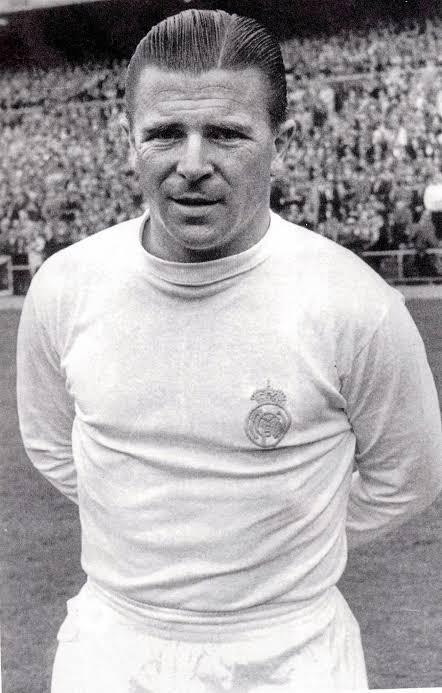
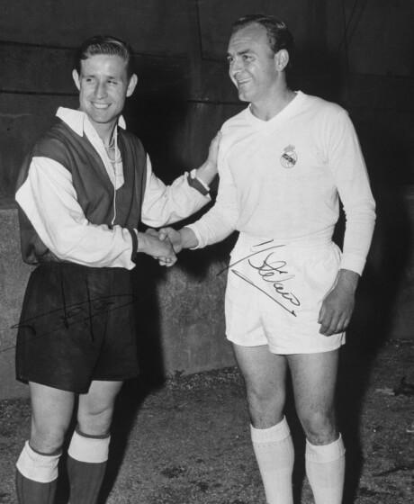

Puskás Ferenc és Nemes György karrierje

1927-ben született Budapesten. Az Aranycsapat vezére volt, 1956 után külföldön maradt. 1958-ban, 31 évesen igazolt a Real Madridhoz, ahol Di Stéfano mellett a világ egyik legjobb támadója lett.
| Madridi évek | 1958–1966 |
|---|---|
| Mérkőzés | kb. 262 |
| Gól | kb. 242 |
| Gólkirály | 4-szer |
| Spanyol bajnok | 5-ször |
1960-ban a BEK-döntőben négy gólt lőtt a Frankfurtnak (7–3). 1962-ben a Benfica ellen mesterhármast szerzett, de a Real kikapott.

1920-ban született Magyarországon. Statisztikai adatbázisok szerint 1950-ben egyetlen mérkőzést játszott a Real Madrid színeiben.
| Madridi év | 1950 |
|---|---|
| Mérkőzés | 1 |
| Gól | 0 |
Róla kevés megbízható forrás van, ezért csak az alapadatok szerepelnek.